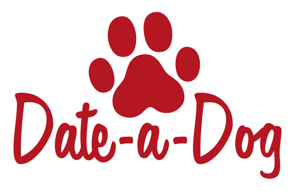
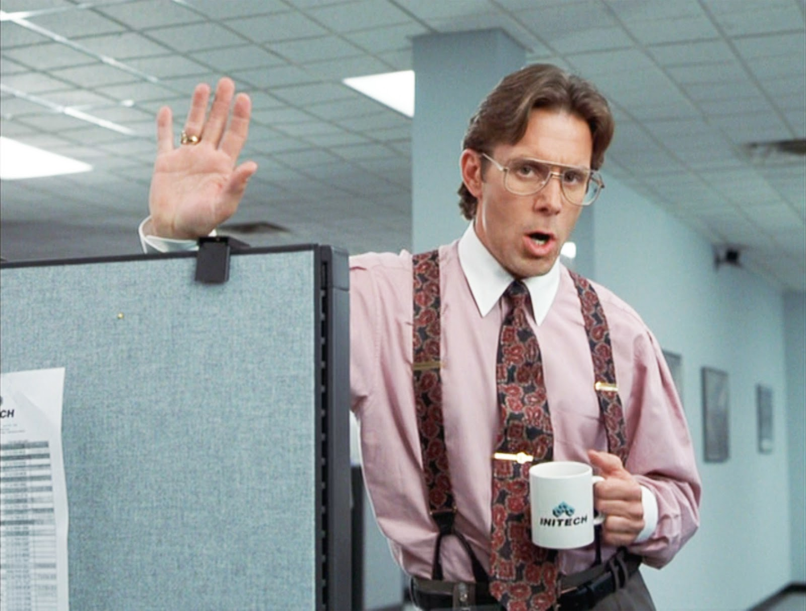

hi
this is our talk
its about software
but really its about life
the life of living with software
TODO picture of frustration
first
im dan
im matt
we work in software

TODO 2-3 pictures of dogs

we are a happy place

people love working here

they are very happy

and content with their jobs

our customers love us

we are very stable

our apis are clean and widely loved

being a software engineer is great too
TODO picture of boss from office space
the workplace is very safe
TODO better pictures of RSI / carpool tunnels
you get to be on the computer all day
TODO pictures of people on computers
which is what you would be doing anyway
TODO pictures of people on computers
some engineers work in open offices
TODO

some work in closed offices
TODO

you get to work with huge nerds
no one showers
TODO

managers are dumb
TODO 
computers are hard
TODO

no one talks to you
this one might be a perk
yeah, strike that one off matt
no one talks to you
thanks matt
TODO 360 no scope nuked kanban gif
lots of talk about agility
and sprints
but cardio is hard
TODO tired engineer
people think you fix printers
TODO picture of printers
people ask you to fix printers
TODO zoomed in picture from before
you end up fixing printers
TODO 360 no scope nuked picture of prinngers
deadlines are unreasonable
TODO picture of missed deadlines
code reviews can be traumatic
TOOD picture of largest number of comments on PR
waterfall doesnt work
TODO picture of TLC
insert agile joke here
ok, so software engineering sucks
but software is good, right?
we write a lot of python / go at Datadog
lets talk about python
>>> True == False
False
>>> 2 ** 8
256
>>> True ** False == True
True
wat
TODO picture wat 1
>>> 1 ** 0 == 1
lets talk about python
>>> type(1) == type(-1)
True
>>> 1 ** 1 == 1 ** -1
True
>>> type(1 ** 1) == type(1 ** -1)
False
wat
TODO picture wat 2
>>> type(1 ** -1) == float
True
>>> a = ([],)
>>> a[0].extend([1])
>>> a[0]
[1]
>>> a[0] += [2]
Traceback (most recent call last):
File "<stdin>", line 1, in <module>
TypeError: 'tuple' object does not support item assignment
>>> a[0]
[1, 2]
wat!?!?!
TODO picture wat 3
lets talk about go
package main
import (
"math"
"fmt"
)
func main() {
a := math.MaxUint64
fmt.Println(a)
}
# command-line-arguments
./main.go:9:4: constant 18446744073709551615 overflows int
wat
TODO picture wat
func err1() error {
var err error
fmt.Println(err == nil)
return err
}
func main() {
err := err1()
fmt.Println(err == nil)
}
true
true
no wat this makes sense
TODO picture thinking face emoji or some shit
type MyError string
func(me MyError) Error() string {
return string(me)
}
func err2() error {
var err *MyError
fmt.Println(err == nil)
return err
}
func main() {
err := err2()
fmt.Println(err == nil)
}
true
false
nil is a tricky beast
Null References: The Billion Dollar Mistake
package main
import "fmt"
func main() {
true := false
fmt.Println(true)
}
false
wat
TODO picture wat
so software is complicated
and convoluted
TODO images from softwaregore
it ages quickly
and constantly reinvents itself
so,
what did we learn
TODO image from burn after reading
all software is terrible
at datadog we help make software reliable
TODO pictures of datadog
with state of the art monitoring and observability tools
TODO pictures of datadog
you can run software with piece of mind
TODO pictures of datadog
TODO picture of holiday party
TODO contact slide